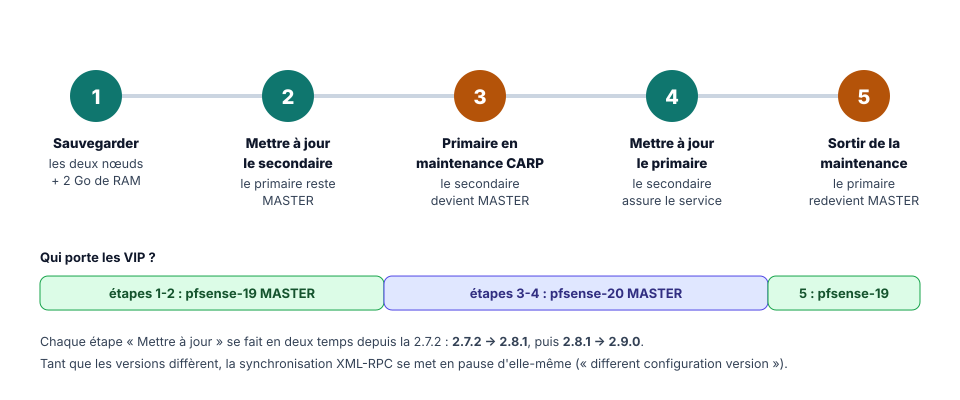
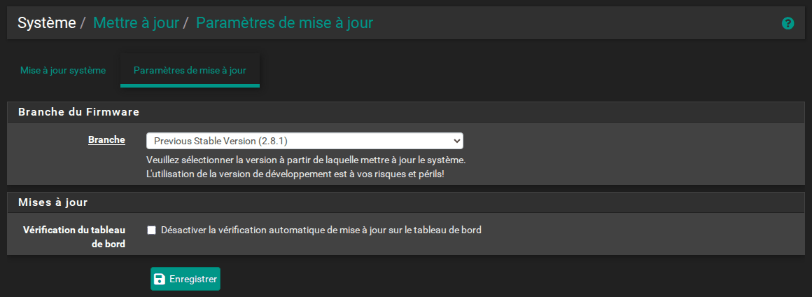
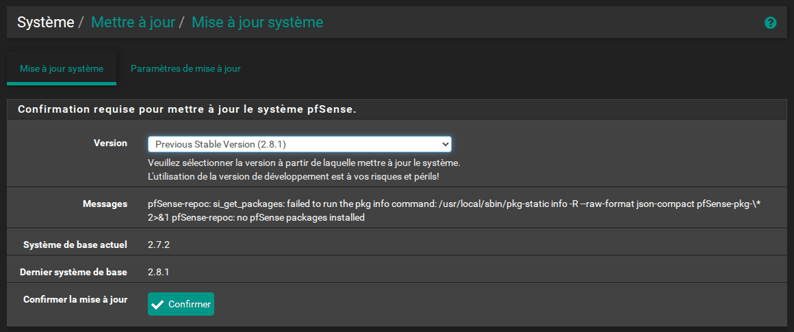
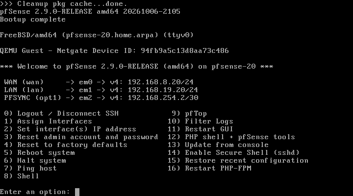
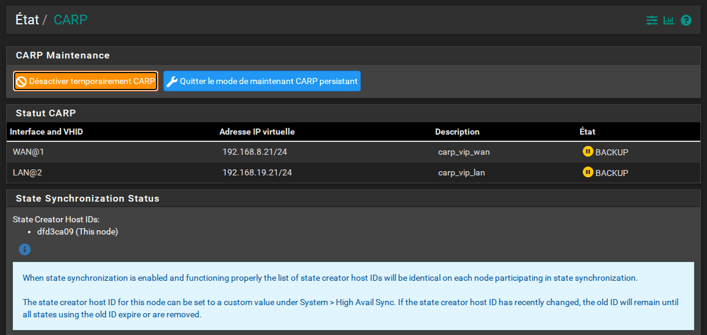

TP pfSense HA : mettre à jour le cluster vers pfSense CE 2.9.0¶
Résumé
pfSense CE 2.7.2 n'est plus maintenue. Ce dernier TP met le cluster à jour vers la 2.9.0, en deux sauts (2.7.2 → 2.8.1 → 2.9.0), sans interruption de service : on ne met jamais à jour le pare-feu qui porte le trafic.
On sauvegarde d'abord les deux nœuds, on met à jour le secondaire, puis on place le primaire en mode de maintenance CARP pour que le secondaire prenne le relais sans coupure, avant de mettre à jour le primaire et de lui rendre la main. Un dépannage détaillé couvre les incidents les plus fréquents.
| Propriété | Valeur |
|---|---|
| Difficulté | Intermédiaire |
| Durée estimée | 2 h 30 à 4 h, surtout du temps de téléchargement |
| Version décrite | pfSense CE 2.7.2, puis 2.8.1, puis 2.9.0 (20 août 2026) |
| Place dans le parcours | Partie 8 sur 8 du parcours Cluster pfSense en haute disponibilité |
| Dernière mise à jour | 2026-11-07 |
Convention de lecture
Chaque action commence par un repère qui indique où elle se fait : 🖥️ PC hôte (hyperviseur, navigateur), 1️⃣ primaire pfsense-19 (https://192.168.19.19), 2️⃣ secondaire pfsense-20 (https://192.168.19.20), 1️⃣ 2️⃣ les deux pare-feux. Les comptes et mots de passe sont rappelés sur la page d'accueil du parcours.
1. Avant de commencer¶
pfSense CE 2.7.2 (décembre 2023) n'est plus maintenue. À la date de rédaction, la version courante est la 2.9.0 (20 août 2026), basée sur FreeBSD 16. Mettre à jour un cluster est un savoir-faire à part entière : bien menée, l'opération se fait sans interruption de service. Entre la 2.7.2 et la 2.9.0, un flux TCP et un ping continus, entre un poste client du LAN et un serveur côté WAN, ne subissent aucune perte lors de l'entrée et de la sortie du mode maintenance.

Ce qu'il faut savoir avant de commencer
- Deux sauts sont nécessaires. Sur une 2.7.2, la page de mise à jour ne propose que la 2.8.1, et la 2.9.0 n'apparaît qu'une fois en 2.8.1. Chaque nœud passe donc par 2.7.2 → 2.8.1 → 2.9.0.
- Internet est indispensable, et le téléchargement est long : 187 paquets pour passer en 2.8.1, puis 184 pour passer en 2.9.0. Chaque saut prend de 25 minutes à 1 heure par nœud, selon la charge des serveurs de Netgate. L'installation et les redémarrages ne durent que 3 à 4 minutes ; tout le reste est du téléchargement.
- 2 Go de RAM par VM. Avec 1 Go, la mise à jour peut réussir sur un nœud et échouer sur l'autre : le système tue alors le processus d'installation par manque de mémoire, et pfSense reste inutilisable (voir le dépannage). L'échec n'est donc pas systématique, mais le risque est réel. Avec 2 Go, les deux sauts se déroulent sans erreur.
- Tant que les versions diffèrent, la synchronisation XML-RPC se suspend d'elle-même. Le journal système du primaire l'indique : « The other member is on a different configuration version of pfSense. Sync will not be done to prevent problems! ». Il ne faut donc rien modifier pendant la mise à jour, car les changements ne seraient pas recopiés.
- Les états pfsync ne passent pas forcément d'une version à l'autre. D'après Netgate, le protocole pfsync change souvent entre versions de FreeBSD : deux nœuds de versions différentes peuvent cesser d'échanger leurs états. La bascule fonctionne quand même, mais sans les états : toutes les connexions en cours sont alors coupées. Entre les versions de ce parcours, un secondaire en 2.9.0 importe encore les états envoyés par un primaire en 2.7.2 (l'inverse ne fonctionne plus) : la bascule vers le secondaire mis à jour conserve donc les connexions en cours, et l'étape 2 se termine par une vérification de ce point. Pour d'autres versions, lire les notes de version et la page de Netgate sur la mise à jour d'un cluster, et prévenir les utilisateurs d'une possible coupure des sessions.
2. Étape 1 — Sauvegarder les deux nœuds et prévoir 2 Go de RAM¶
1️⃣ 2️⃣ Sur chaque pare-feu, ouvrir Diagnostics > Backup & Restore, laisser Backup area sur All, puis cliquer sur Download configuration as XML.
🛟 Point de sauvegarde : 🖥️ prendre aussi un instantané des deux VM, nommé 05-avant-mise-a-jour : en cas d'échec, c'est le moyen le plus rapide de revenir en arrière.
Si les VM ont été créées avec 1 Go, 2️⃣ éteindre le secondaire (console : option 6) Halt system), 🖥️ porter sa mémoire à 2 Go dans les paramètres de la VM, puis le rallumer. Comme il est BACKUP, le service n'est pas affecté. Le primaire sera traité à l'étape 3, une fois en maintenance.
3. Étape 2 — Mettre à jour le secondaire (2.7.2 → 2.8.1 → 2.9.0)¶
2️⃣ Sur le secondaire :
-
Ouvrir System > Update (Système > Mettre à jour), onglet Update Settings (Paramètres de mise à jour). Choisir Branch : Previous Stable Version (2.8.1), puis Save.

Paramètres de mise à jour : branche 2.8.1
-
Onglet System Update (Mise à jour système) : patienter jusqu'à ce que Latest Base System (Dernier système de base) affiche
2.8.1. L'état « Retrieving » peut durer une à deux minutes.
Mise à jour système : 2.7.2 installée, 2.8.1 disponible
Le message « pfSense-repoc: … no pfSense packages installed »
Ce message apparaît dans la zone Messages sur une pfSense CE fraîchement installée. Il est sans conséquence : la mise à jour fonctionne malgré lui.
-
Cliquer sur Confirm. La page affiche la progression du téléchargement. Dans la console, la suite se déroule ainsi :
- le message « System is going to be upgraded. Rebooting in … seconds » annonce un premier redémarrage ;
- le nouveau FreeBSD et les paquets s'installent pendant deux à trois minutes ;
- le message « Rebooting now » annonce un second redémarrage, et la console affiche
net.inet.carp.allow: 1 -> 0: pfSense désactive CARP avant de s'arrêter ; - le menu habituel revient.
Ne pas éteindre la VM pendant cette phase. Des messages inquiétants peuvent défiler, comme « POST-INSTALL script failed » ou « missing file » : ils sont sans conséquence.
-
Vérifier la bannière de la console,
*** Welcome to pfSense 2.8.1-RELEASE ***, et, dans Status > CARP (failover), que le secondaire est toujours BACKUP. - Recommencer avec Branch : Current Stable Version (2.9.0). Cette option n'apparaît qu'en 2.8.1. Cliquer sur Save, puis sur System Update > Confirm.
-
Vérifier la bannière
2.9.0-RELEASEet l'état BACKUP.
Console du secondaire après la mise à jour en 2.9.0
-
Vérifier que le secondaire fonctionne vraiment avant de lui confier le trafic. Une bannière
2.9.0-RELEASEet l'état BACKUP ne suffisent pas : des services ou des paquets peuvent être cassés. 2️⃣ Sur le secondaire :- Status > Services : tous les services listés sont en cours d'exécution ;
- System > Package Manager > Installed Packages : les paquets éventuellement installés sont présents (aucun sur une installation du parcours, sauf Shellcmd si les annexes ont été suivies) ;
- Status > System Logs > System et la cloche des notifications : aucune erreur évidente ;
- Diagnostics > Ping :
1.1.1.1répond avec Source addressWAN, et192.168.19.1(le PC hôte) avec Source addressLAN; - Diagnostics > Command Prompt :
pfctl -vvss | grep -o "creatorid: [0-9a-f]*" | sort | uniq -caffiche toujours deux identifiants, dont celui du primaire : le secondaire reçoit encore ses états, la bascule conservera les connexions en cours.
Si une vérification échoue : ne pas passer à l'étape 3
Le primaire porte toujours seul le trafic : rien n'est perdu. Corriger le secondaire, ou 🖥️ restaurer son instantané 05-avant-mise-a-jour (le primaire n'a pas changé depuis), puis recommencer l'étape 2. Si seul le dernier point échoue (identifiant du primaire absent), la bascule fonctionnera mais coupera les connexions en cours : la faire à un moment où cette coupure est acceptable.
4. Étape 3 — Placer le primaire en maintenance CARP¶
🖥️ Sur le PC hôte, lancer d'abord un ping continu vers la VIP LAN (ping -t 192.168.19.21 sous Windows, ping 192.168.19.21 sous Linux), comme à la partie 6. Si le poste client de la partie 6 existe, y lancer aussi ping 1.1.1.1.
1️⃣ Sur le primaire, ouvrir Status > CARP (failover) et cliquer sur Enter Persistent CARP Maintenance Mode (Entrer en mode de maintenance CARP persistant).

Primaire en maintenance CARP : ses VIP sont en BACKUP
Ce mode règle le skew de toutes les VIP du primaire à 254 (advskew 254 dans ifconfig). Le secondaire, dont les annonces sont désormais plus fréquentes, devient MASTER. La bascule est planifiée : au lieu de disparaître brutalement, le primaire annonce sa nouvelle priorité, plus faible. Le secondaire prend donc le relais immédiatement, sans attendre le délai de détection d'une panne (environ 3,4 s) : aucun ping vers la VIP n'est perdu.
Vérifier tout de suite que le trafic passe : 2️⃣ le secondaire affiche MASTER pour les deux VIP dans Status > CARP (failover), et les pings lancés plus haut répondent toujours.
Si le réseau ne fonctionne plus : sortir de la maintenance
1️⃣ Cliquer aussitôt sur Leave Persistent CARP Maintenance Mode : le primaire, toujours dans son ancienne version, reprend le trafic. Corriger le secondaire (retour à l'étape 2 et à ses vérifications), puis recommencer cette étape. C'est la consigne de Netgate : on ne met jamais à jour le primaire tant que le secondaire n'a pas prouvé qu'il assure le service.
Contrairement à Temporarily Disable CARP, ce mode persiste après un redémarrage. Si le primaire n'a que 1 Go, 🖥️ l'éteindre maintenant, lui donner 2 Go et le rallumer : il reste bien BACKUP au redémarrage, sans aucune perte de ping.
5. Étape 4 — Mettre à jour le primaire¶
1️⃣ Sur le primaire, refaire les deux sauts de l'étape 2 (2.8.1, puis 2.9.0). Pendant ce temps, le secondaire assure seul le service.
Avant de sortir de la maintenance, faire sur le primaire les mêmes vérifications qu'au point 7 de l'étape 2 : services, paquets, journaux et pings (le dernier point, sur les identifiants pfsync, se contrôle après l'étape 5).
6. Étape 5 — Sortir du mode de maintenance¶
1️⃣ Sur le primaire, dans Status > CARP (failover), cliquer sur Leave Persistent CARP Maintenance Mode (Quitter le mode de maintenance CARP persistant). Le primaire redevient MASTER grâce à la préemption, sans perte de ping.
Vérifications finales
- Les deux consoles affichent
pfSense 2.9.0-RELEASE. - Le primaire est MASTER et le secondaire BACKUP sur les deux VIP.
- La synchronisation XML-RPC a repris : une règle de test créée sur le primaire apparaît sur le secondaire, et sa suppression est elle aussi répliquée. En 2.9.0, une synchronisation réussie n'ajoute aucune ligne au journal système : ce test est donc la vérification la plus fiable.
- Dans Status > CARP (failover), la section State Synchronization Status liste les deux mêmes identifiants sur les deux nœuds (voir la partie 6) : pfsync fonctionne de nouveau dans les deux sens.
- Si le navigateur affiche un nouvel avertissement de certificat, c'est que pfSense a recréé le certificat de son interface web, ce qui peut arriver sur un nœud et pas sur l'autre. Il suffit d'accepter le nouveau certificat.
7. Dépannage de la mise à jour¶
La page indique toujours 2.7.2, « Your system is up to date » ou « Unable to check for updates »
Ces trois cas se rencontrent juste après un changement de branche. Pour en sortir :
- Retourner dans Update Settings, vérifier la branche et cliquer de nouveau sur Save.
- Dans Diagnostics > Command Prompt, lancer
pfSense-upgrade -c. La commande doit répondre2.8.1 version of pfSense is available, ou indiquer la version visée. - Recharger la page System Update.
Le message « Another instance of pfSense-upgrade is running » signifie qu'une vérification est déjà en cours : patienter quelques minutes, puis recharger.
Après le redémarrage, la console affiche php: not found et une invite login:
C'est le symptôme d'une mise à jour lancée avec 1 Go de RAM. La console affiche notamment :
/etc/rc.bootup: not foundetpfSense-upgrade: php: not found;- une invite
FreeBSD/amd64 (Amnesiac) (ttyv0) login:à la place du menu ; - une interface web injoignable.
La commande dmesg (connexion en root avec le mot de passe du compte admin) montre pkg-static … was killed: failed to reclaim memory. L'installation a été interrompue à mi-chemin : le nouveau FreeBSD est en place, mais pas les paquets de pfSense.
Solution : restaurer l'instantané de l'étape 1 (05-avant-mise-a-jour), porter la RAM à 2 Go, puis recommencer la mise à jour. Sans instantané, il faut réinstaller pfSense et restaurer la sauvegarde config.xml de l'étape 1.
Netgate propose aussi l'option 13) Update from console, qui lance la même mise à jour en mode texte, et des commandes de réparation (pkg-static clean -ay; pkg-static install -fy pkg pfSense-repo pfSense-upgrade) dans sa page Troubleshooting upgrades.
8. Questions de révision¶
- Pourquoi met-on à jour le secondaire en premier ?
- Pourquoi faut-il deux sauts pour passer de la 2.7.2 à la 2.9.0 ?
- Pourquoi porter la RAM des VM à 2 Go avant la mise à jour ?
- Que vérifier sur le secondaire avant de placer le primaire en maintenance, et que faire si le réseau ne fonctionne plus une fois le primaire en maintenance ?
- Quelle différence entre Temporarily Disable CARP et Enter Persistent CARP Maintenance Mode, et pourquoi le second évite-t-il toute coupure ?
- Les connexions en cours survivent-elles toujours à la bascule vers un secondaire mis à jour ? Comment le savoir avant de basculer ?
Corrigé
- Le secondaire est BACKUP : il ne porte pas le trafic, sa mise à jour et ses redémarrages n'affectent pas le service. Une fois à jour, il peut reprendre le trafic pendant celle du primaire. On ne met jamais à jour le pare-feu qui porte le trafic.
- Sur une 2.7.2, la page de mise à jour ne propose que la 2.8.1 ; la 2.9.0 n'apparaît qu'une fois le nœud en 2.8.1. Chaque nœud passe donc par 2.7.2 → 2.8.1 → 2.9.0.
- Avec 1 Go, le système peut tuer le processus d'installation par manque de mémoire : le nouveau FreeBSD est en place mais pas les paquets de pfSense, qui reste inutilisable (
php: not found). Avec 2 Go, les deux sauts se déroulent sans erreur. - Pas seulement la version et l'état BACKUP : les services (Status > Services), les paquets, les journaux et les notifications, la connectivité (pings depuis le WAN et le LAN) et la réception des états du primaire (
pfctl -vvss). Si le réseau ne fonctionne plus une fois le primaire en maintenance, cliquer aussitôt sur Leave Persistent CARP Maintenance Mode : le primaire, encore dans l'ancienne version, reprend le trafic. On corrige le secondaire, puis on recommence. - Temporarily Disable CARP coupe CARP sur le nœud, et ne survit pas à un redémarrage. Le mode de maintenance persistant règle le skew de toutes les VIP du nœud à 254 et persiste après un redémarrage. La bascule est planifiée : le primaire annonce une priorité plus faible au lieu de disparaître, et le secondaire prend le relais immédiatement, sans attendre le délai de détection d'environ 3,4 s.
- Non, pas toujours. Le protocole pfsync change souvent entre versions de FreeBSD : deux nœuds de versions différentes peuvent cesser d'échanger leurs états, et la bascule coupe alors les connexions en cours. Entre la 2.7.2 et la 2.9.0, le secondaire mis à jour importe encore les états du primaire. On le vérifie avant de basculer : sur le secondaire,
pfctl -vvss | grep -o "creatorid: [0-9a-f]*" | sort | uniq -cdoit toujours afficher l'identifiant du primaire.
Ressources¶
- Netgate — Upgrading a High Availability Cluster — Ordre officiel de mise à jour.
- Netgate — CARP Status — Désactivation temporaire et mode de maintenance.
- Netgate — Troubleshooting upgrades — Que faire si la mise à jour échoue.
- Netgate — Notes de version pfSense CE 2.9.0
- Partie précédente : Agrégation LACP et troisième nœud · Annexes : dépannage, aide-mémoire et glossaire.